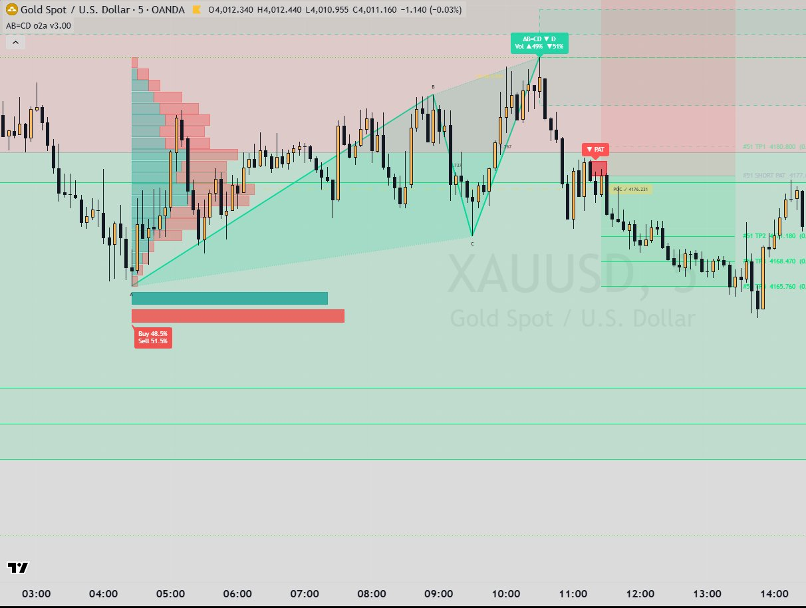

Indicators / AB=CD Pattern
Harmonic patternAB=CD Pattern
Finds four-point AB=CD patterns from zigzag swing pivots on the chart timeframe and draws them. At point D it draws an inner and an outer reversal zone (PRZ) and fires signals when price rejects or breaks those zones. Each signal can open a tracked position with up to four targets, a stop and optional breakeven, and a statistics table counts the results. This description is taken from the MT5 port (V1.10); the TradingView v3.00 source was not available.

What it draws
- Pattern legs A-B, B-C, C-D with optional shaded wings, vertex labels A, B, C and optional ratio labels
- Inner PRZ box (reversal side of D) and outer PRZ box (beyond D), extending until mitigated (max 120 active each)
- Live forming pattern at point D
- Signal markers: PAT, IWR, ICR, OWR, OCR (arrows) and B&R (bubble)
- Positions: entry, SL and TP1-TP4 lines with labels and risk/reward zones (closed positions kept: 20)
- Statistics table: per signal type - signals, trades, open, Win %, TP1, TP2, TP3, TP4, SL, average R, net R (R model selectable)
Signals
- PAT (Pattern Formed)
- Fires when a new AB=CD is confirmed on a closed bar. Points are the last four alternating swing pivots A-B-C-D (bullish: A high, B low, C high, D low; bearish mirrored). Rules: BC = 0.618-0.786 of AB and CD = 1.272-1.618 of BC, each band widened by the Fibonacci Error Tolerance % (default 10%); symmetry |CD - AB| / AB at most tolerance x 2 (20%); AB and CD each at least 0.8 x ATR(14); A to D length 10-300 bars. Long for bullish, short for bearish.
- IWR (Inner Wick Rejection)
- Bullish example: price has cleared above the inner box, then a bar's low dips into the inner box but stays at or above D, and the bar closes back above the inner box. Long.
- ICR (Inner Close Rejection)
- Bullish example: after clearing above the inner box, a bar closes inside it, and a later bar closes back above it, without the inner box being broken through D. Long.
- OWR (Outer Wick Rejection)
- Bullish example: while the outer box is alive and armed (a bar has traded fully above D), a bar's low goes below D and the bar closes back above D. Long.
- OCR (Outer Close Rejection)
- Bullish example: while the outer box is alive, a bar closes below D, and a later bar closes back above D. Long.
- B&R (Outer Break & Retest)
- Bullish-pattern example: price breaks below the outer box far edge (by close by default), then on a later bar the high reaches that edge and the bar closes back below it. Short (opposite to the pattern). Cancelled if price closes back above D first.
- Limits
- Up to 5 rejection signals per type per pattern; signals stop 20 bars after confirmation (0 = no limit); signals on bar close only by default.
Main settings
| Setting | Default | What it does |
|---|---|---|
| ZigZag Swing Period / Pivot Confirmation Depth | 10 / 3 | A swing pivot must beat 10 bars on the left and is confirmed 3 bars later. |
| Fibonacci Error Tolerance % | 10 | Widens the ratio bands; with the symmetry multiplier sets how equal AB and CD must be. |
| BC Retracement of AB / CD Extension of BC | 0.618-0.786 / 1.272-1.618 | Ratio rules of the pattern. |
| AB=CD Symmetry Tolerance (x Fib Tolerance) | 2.0 | Maximum difference between the AB and CD leg lengths. |
| Minimum AB / CD Leg Size (x ATR 14) | 0.8 | Skips small patterns. |
| Zone Size Method | ATR Multiple (1.4 x ATR 14) | PRZ height; also Auto, % of CD leg or fixed distance. |
| Inner / Outer box % and mitigation | Inner 38.6% (Close) / Outer 70.5% (Wick) | Size of each box and whether a wick or a close mitigates it. |
| TP Mode | R multiple: TP1 1R, TP2 2R, TP3 7R, TP4 9R | Alternative 'Pattern' mode: TP1 = midpoint of C-D, TP2 = C, TP3 = midpoint of A-C, TP4 = A. B&R always uses R multiples. |
| SL anchors and buffers | Inner entries: outer far edge + 0.2 ATR; Outer entries: outer far edge + 0.5 ATR; B&R: retest candle wick + 30% of PRZ; PAT uses the Outer group | Stop placement per signal group. |
| Move SL to Entry After / R Model | Off / All-In @ TP4 | Optional breakeven after TP1-TP3; how the statistics table counts R (equal scale-out or all-in at one TP). |
Timeframes
The MT5 port runs entirely on the chart timeframe (no higher-timeframe input). The project's Butterfly README says the TradingView AB=CD [o2a v3.00] is built on the same base as Butterfly, which runs on a script-built 'Pattern Timeframe'; that version could not be checked because its source is not on disk.
Alerts
MT5 port: none. TradingView v3.00: unclear (source not available; the Butterfly source says its alerts were removed relative to the AB=CD base, which suggests the AB=CD base has alerts, but their conditions are unknown).
Closed candles and repainting
- Swing pivots are confirmed 3 bars after the pivot bar, so a pattern appears 3 bars after point D.
- Signals fire on closed bars only when 'Signal on Bar Close Only' is on (default); positions are managed on every bar, and a bar touching both SL and a TP counts as SL first.
- The live forming pattern at point D updates with price until the pivot is confirmed.
On MetaTrader 5
- This port reproduces the Pine V1.10 version (verified V1.04 engine plus PAT signal, positions with 4 TPs, Inner/Outer/B&R stops, breakeven, risk/reward zones and the statistics table). Features the Butterfly README attributes to the v3.00 base (Pattern Timeframe HTF engine, TSI/RSI signals in the PRZ, volume profile, pattern-data table) are NOT in this MT5 port.
- MT5 defaults are the author's live chart settings of the V1.10 copy.
- MT5-only: mid price option (bid + half spread), 20,000 chart bars calculated, Pine-style 500-object drawing limit, CSV dump of patterns / signals / positions.
- The forming chart bar is worked on a copy of the state so nothing is committed until the bar closes.